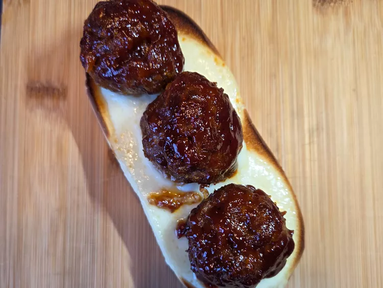

Homepage
BBQ Meatballs

Sheet pan-baked BBQ meatballs are bursting with all the goodness of the grill. Smoky and tangy, they are perfect on a sub sandwich or just for eating on their own.
Ingredients
- 1 pound ground beef, 20% fat or higher preferred
- 1 large egg
- 1/2 cup crushed tortilla chips
- 2 tablespoons ketchup
- 2 tablespoons brown sugar
- 1 teaspoon smoked paprika
- 1 teaspoon garlic powder
- 1 teaspoon onion powder
- 1/2 teaspoon cayenne pepper
- 1/2 teaspoon dried oregano
- 1/2 teaspoon salt
- 1/2 teaspoon freshly ground black pepper
- 2 tablespoons BBQ sauce, or as needed for basting
Steps
- Preheat the oven to 400 degrees F (200 degrees C). Line a baking sheet with parchment.
- Add ground beef, egg, tortilla chips, ketchup, brown sugar, smoked paprika, garlic powder, onion powder, cayenne, oregano, salt, and black pepper to a large bowl. Mix together gently with your hands until evenly combined. Roll mixture into balls, about the size of a golf ball. Place meatballs on the prepared baking sheet.
- Bake in the preheated oven for 12 minutes. Remove from the oven and baste with BBQ sauce. Return to the oven and bake about 12 more minutes. An instant-read thermometer inserted into the center should read at least 160 degrees F (70 degrees C). Serve as desired.
Cook's Note
To make a meatball sub sandwich, toast both halves of a hoagie roll, then melt provolone on the toast. Place 3 meatballs and some additional BBQ sauce on bottom half, then top with other half.